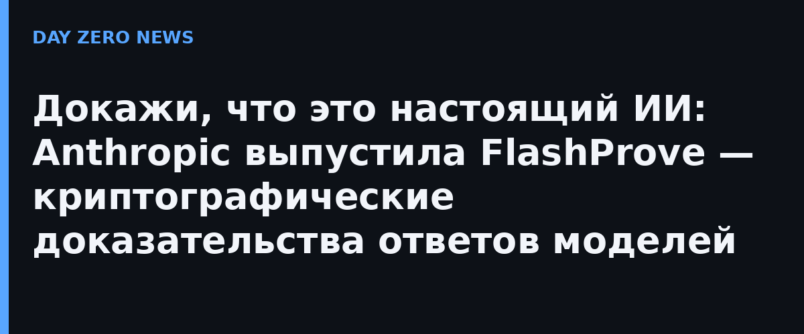

Когда запрос уходит к модели через агрегатор или маршрутизатор, пользователь не может проверить, та ли модель ответила. Сервису выгодно незаметно подменить флагман на дешёвую модель, а злоумышленнику — подменить поток токенов, притворившись настоящей. На глаз разница незаметна: ответы могут быть одинаково хорошего качества. Даже имея доступ к весам модели, проверить ответ невозможно без полного прогона модели — это ресурсы, недоступные ни обычному пользователю, ни большинству независимых evaluators.
Anthropic предлагает выход — проверку вывода (inference verification): вместе с ответом сервис присылает короткое криптографическое доказательство (несколько мегабайт), а клиент проверяет его за секунды на обычном CPU. Доказательство при этом ничего не сообщает о весах модели.
Система построена на zkSNARK — компактных доказательствах с нулевым разглашением. Показатели сняты на открытой модели Llama 4 Maverick (400 млрд параметров, смесь экспертов, веса в 4-битном квантовании): один GPU H100 генерирует доказательства со скоростью около 110 токенов в секунду, размер доказательства — примерно 19 МБ на запрос в 1024 токена. Генерация доказательства стоит примерно в 70–95 раз больше времени GPU, чем сам прогон модели на vLLM. Прежние открытые системы были на порядки медленнее. Честное ограничение: пока доказуется контекст всего до 1024 токена — до «миллионных» чат-окон ещё далеко.
Anthropic подчёркивает: новые применения современных криптографических инструментов нашёл Claude, а сам прототип — промежуточный результат, а не конечный продукт. Выпущено пять артефактов: пост, технический отчёт, спецификация протокола, исполняемый код (доказыватель и два проверщика — быстрый на C++ и «доказуемо корректный» на Lean) и формальные Lean-доказательства главных утверждений о безопасности. Всё под лицензией Apache 2.0 — берите и улучшайте.
Списоксценарии применения складывается из скучных, но дорогих вещей: независимые аудиторы, тестирующие модели до и после релиза, получают гарантию, что тестируют именно выставляемую модель; клиенты роутеров — подтверждение, что токены пришли из купленной модели; регуляторы — инструмент проверки заявленных обязательств. Выход доказательств на реальные скорости на одном GPU переводит «докажи, что это настоящий ИИ» из академической задачи в инженерную.
Официального российского аналога в этой конкретной области (криптографическое доказывание вывода моделей) публично не заявлено — вставка здесь была бы выдумкой, так что обойдёмся без неё.